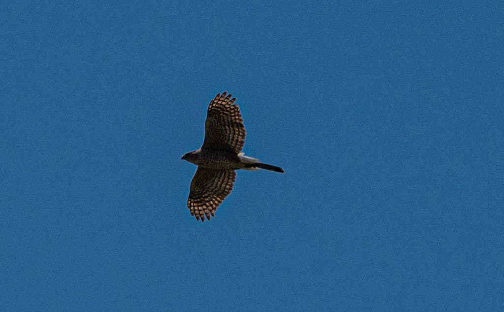

Astur cooperii
Accipitridae
📷 Photo by Rob Carr · CC-BY-NC · via iNaturalist · 📅 Mar 3, 2025
Quick Hits
- A medium-sized hawk built for speed in tight spaces — long tail, short rounded wings, and the agility to chase songbirds through dense trees.
- If the birds at a feeder suddenly vanish, a Cooper's hawk is often the reason.
- Adults have a blue-gray back and rusty-barred chest; immatures are brown and streaky — a different look entirely.
- It has adapted well to suburban life, and backyard bird feeders are effectively hawk feeders from its perspective.
How to Spot It
Shape
Long tail with a rounded tip, short rounded wings — built for agility.
Adult
Blue-gray above, rusty-barred chest, dark cap.
Immature
Brown above, white below with brown streaks.
Flight
Fast, agile, with quick wingbeats and glides through trees.
Voice
A sharp, rapid 'kak-kak-kak' — most vocal near the nest in spring.
What to Look For
A sleek hawk with a long tail gliding through trees or perched quietly near a bird feeder. Adults are blue-gray and rusty; immatures are brown and streaky.
What It Eats
Mostly birds — doves, robins, jays, starlings, and smaller songbirds. Also takes squirrels and chipmunks.
Where & When
Where in the park
Scan the canopy edges and listen for alarming songbirds — a sudden silence often means a Cooper's hawk is nearby.
When to see it
Year-round, with more birds present in winter.
Watching It Respectfully
Observe and enjoy.
Photo Credits
- © Rob Carr (CC-BY-NC), via iNaturalist